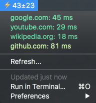
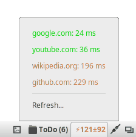
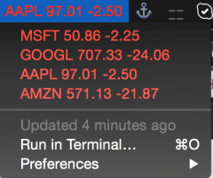
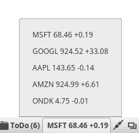
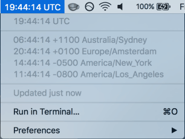
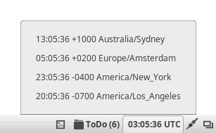
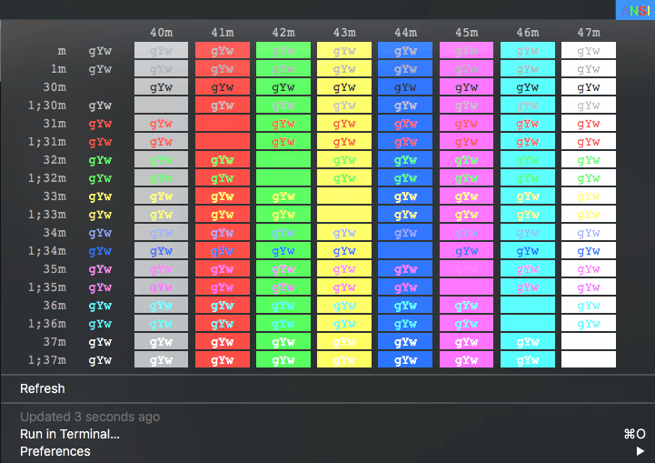
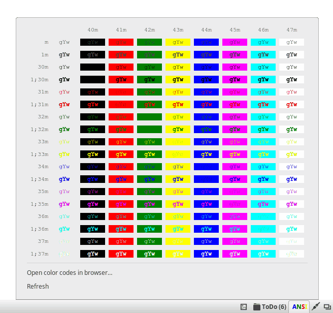

Ayuda para Argos para Cinnamon
Jamás borrar ninguno de los archivos encontrados dentro de la carpeta de este xlet. Podría romper la funcionalidad del xlet.
Los reportes de fallos, peticiones de características y contribuciones deben hacerse en el repositorio de este xlet vinculado a continuación. GitLab
Si este xlet se instaló desde Configuración de Cinnamon, todas las localizaciones de este xlet se instalaron automáticamente.
Si este xlet se instaló manualmente y no a través de Configuración de Cinnamon, las localizaciones se pueden instalar ejecutando el archivo llamado helper.py desde una terminal abierta dentro de la carpeta del xlet.
Descripción
Argos para Cinnamon es un applet que convierte la salida estándar de archivos de comando en menúes desplegables del panel. Está inspirado y es totalmente compatible con la extensión para Gnome Shell llamada Argos por Philipp Emanuel Weidmann, que a su vez está inspirada y es totalmente compatible con la aplicación BitBar para macOS. Argos para Cinnamon soporta muchos complementos de BitBar sin modificaciones, lo que le da acceso a una gran biblioteca de archivos de comandos bien probados, además de ser capaz de escribir el suyo propio.
Características principales
- 100% API compatible con BitBar 1.9.2: Todos los complementos para BitBar que corren en Linux (por ejemplo, que no contienen código específico de macOS) van a funcionar con Argos (si no funcionan, es un error en Argos). Ver Complementos de BitBar con Argos para Cinnamon.
- Más allá de BitBar: Argos puede hacer todo lo que BitBar puede hacer, pero también algunas cosas que BitBar no puede hacer (todavía). Continuar leyendo esta documentación para más detalles.
- Motor de ejecución asincrónica sofisticado: No importa cuánto tiempo tomen sus archivos de comandos en ejecutarse, Argos las programará inteligentemente y evitará el bloqueo.
- Soporte Unicode: Sólo imprima su texto en stdout. Se traducirá de la manera que usted espera.
- Optimizado para el consumo mínimo de recursos: Incluso con varios complementos actualizando cada segundo, Argos normalmente usa menos del 1 por ciento de la CPU.
- Totalmente documentado:
Ver Uso del applet.
Uso del applet
Voy a usar las palabras complemento o archivo de comandos cuando me refiera a un archivo de comandos asociado a una instancia del applet Argos para Cinnamon.
Después de colocar una nueva instancia de Argos para Cinnamon en un panel, uno de los archivos de comandos de ejemplo proporcionados por este applet se adjuntará automáticamente a él y se creará un menú basado en la salida del complemento ejecutado. Estos archivos de comandos de ejemplo contienen varios ejemplos de lo que Argos para Cinnamon es capaz de hacer.
Un applet recién colocado tendrá un intervalo de ejecución inicial de 0 segundos (cero segundos) y un intervalo inicial de rotación de texto de applet de 3 segundos (tres segundos). El intervalo de ejecución se establece en 0 segundos porque la secuencia de comandos de ejemplo inicial no tiene ningún dato dinámico que requiera actualización. Y el intervalo de rotación de texto de applet se establece en 3 segundos para que la rotación de texto del archivo de comandos de ejemplo se pueda ver en acción.
Para los archivos de comandos que muestran datos no dinámicos, no se necesita un intervalo de ejecución. Pero si su archivo de comandos muestra datos dinámicos (un reloj por ejemplo), entonces se debe especificar un intervalo de ejecución y/o de rotación de texto del applet. Ambos valores se pueden establecer desde el menú contextual del applet.
Los tres archivos de comandos de ejemplo proporcionados por este applet producirán exactamente la misma salida, pero se crean utilizando tres idiomas diferentes (bash_examples.bash, python_examples.py y ruby_examples.rb).
Formato del nombre de archivo
Argos para Gnome Shell analiza el nombre de archivo de los archivos de comandos para extraer cierto conjunto de preferencias. Argos para Cinnamon no analiza el nombre de los archivos de comandos de tal manera (ni de ninguna otra manera). Todas las configuraciones del applet se pueden realizar desde la ventana de configuración del applet y/o desde el menú contextual del applet.
Formato de salida
Los complementos de Argos son ejecutables (como archivos de comandos de shell (*)) que imprimen líneas de salida estándar de la siguiente forma:
TEXT | ATTRIBUTE_1=VALUE ATTRIBUTE_2=VALUE ...
Todos los atributos son opcionales, por lo que los complementos más básicos simplemente imprimen líneas que consisten en texto que se mostrará. Para incluir espacios en blanco, los valores de atributo se pueden citar utilizando la misma convención empleada por la mayoría de los shells de línea de comandos.
Representación
Las líneas que contienen sólo guiones (---) son separadores.
Las líneas sobre el primer separador pertenecen al propio botón del applet. Si hay varias líneas de este tipo, se muestran sucesivamente, cada una de ellas durante un intervalo de tiempo configurable (intervalo de rotación) antes de pasar a la siguiente. Además, todas las líneas de botones obtienen un elemento de menú desplegable, excepto si su atributo dropdown está establecido en false.
Las líneas debajo del primer separador se representan como elementos del menú desplegable. Otros separadores crean separadores gráficos de elementos del menú.
Las líneas que comienzan con -- son representadas como un submenú asociado con la línea sin sangría precedente. Argos para Cinnamon soporta un número ilimitado de submenús anidados.
Códigos emoji como :horse: y :smile: en el texto de línea se sustituyen por sus caracteres Unicode correspondientes (a menos que el atributo emojize sea establecido en false). Tener en cuenta que Cinnamon "sin parchear" todavía no soporta emojis multicolor.
Secuencias de escape ANSI SGR y etiquetas de marcado Pango pueden ser utilizadas para darle estilo al texto. Esto puede desactivarse estableciendo los atributos ansi y useMarkup, respectivamente, en false.
Los escapes de barra invertida como \n y \t en el texto de línea se convierten a sus caracteres correspondientes (nueva línea y tabulador en este caso), lo que puede evitarse si se establece el atributo unescape en false. Las salidas de nueva línea se pueden utilizar para crear elementos de menú de varias líneas.
Atributos de línea
Visualización
Controla cómo se representa la línea.
| Atributo | Valor | Descripción |
|---|---|---|
color |
Representación hexadecimal RGB/RGBA o nombre de color | Establece el color de texto para el ítem. |
font |
Nombre de fuente | Establece la fuente para el ítem. |
size |
Tamaño de fuente en puntos (points). | Establece el tamaño de fuente para el ítem. |
iconName |
Nombre de ícono | Establece un ícono para el elemento de menú. Consulte la especificación de nombres de íconos en freedesktop.org para obtener una lista de nombres estándar, o ejecutar gtk3-icon-browser para ver los nombres de todos los íconos soportados por el tema de íconos en use. Argos only. Argos para Cinnamon también soporta una ruta a un archivo de ìcono (las rutas que comienzan con ~ / se expandirán a la carpeta del usuario). |
image, templateImage |
Archivo de imagen codificado en Base-64 | Procesa una imagen dentro del elemento. La imagen se coloca a la izquierda del texto y a la derecha del icono. Cinnamon no tiene un concepto de plantilla de imágenes, por lo que image y templateImage son intercambiables en Argos. |
imageWidth, imageHeight |
Ancho/Altura en píxeles | Establece las dimensiones de la imagen. Si solo se especifica una dimensión, se mantiene la relación de aspecto original de la imagen. Argos solamente. |
length |
Longitud en caracteres | Truncar el texto de línea al número especificado de caracteres, elipsando la parte truncada. |
trim |
(2) Valor booleano | Si deshabilitado, conserva los espacios en blanco al inicio y al final de la línea de texto. Habilitado por defecto si no es especificado. |
dropdown |
(2) Valor booleano | Si deshabilitado y la línea es una línea para el botón (ver arriba), excluya que se muestre en el menú desplegable. Habilitado por defecto si no es especificado. |
alternate |
(2) Valor booleano | Si habilitado, el elemento se oculta de forma predeterminada y se muestra en lugar del elemento anterior cuando se pulsa la tecla Alt. |
emojize |
(2) Valor booleano | Si deshabilitado, deshabilita la sustitución de :emoji_name: con caracteres emoji en el texto de línea. Habilitado por defecto si no es especificado. |
ansi |
(2) Valor booleano | Si deshabilitado, desactivar la interpretación de las secuencias de escape ANSI en el texto de línea. Habilitado por defecto si no es especificado. |
useMarkup |
(2) Valor booleano | Si deshabilitado, deshabilita la interpretación del marcado de Pango en el texto de línea. Argos solamente. Habilitado por defecto si no es especificado. |
unescape |
(2) Valor booleano | Si deshabilitado, deshabilitar la interpretación de los escapes de barra invertida como \n en el texto de línea. Argos solamente. Habilitado por defecto si no es especificado. |
Atributos disponibles en Argos para Cinnamon solamente.
| Atributo | Valor | Descripción |
|---|---|---|
tooltip |
Texto a mostrar como información sobre herramientas | Establece la información de herramientas para el elemento. |
iconSize |
Un número entero de 12 a 512 | Establece el tamaño del ícono para el ítem de menú si lo hay. El tamaño de los íconos de los ítems de menú pueden ser definidos globalmente en las preferencias de una instancia de Argos para Cinnamon. |
iconIsSymbolic |
(2) Valor booleano | Si habilitado, la versión simbólica de iconName será usada en el ítem (si existe). Este atributo is ignorado si el ícono definido en iconName es una ruta a un archivo de ícono. |
Acciones
Defina las acciones a realizar cuando el usuario hace clic en el elemento de menú de la línea.
Los atributos de acción no son mutuamente exclusivos. Cualquier combinación de ellos puede estar asociada con el mismo elemento, y todas las acciones se ejecutan cuando se hace clic en el elemento.
| Atributo | Valor | Descripción |
|---|---|---|
command, bash |
El comando a ejecutar | (1) Ejecuta un comando usando una shell por defecto especificada en las opciones de una instancia de Argos para Cinnamon o especificada por el atributo shell. |
shell |
Camino o nombre de ejecutable de un programa shell | Este atributo anula la shell especificada por defecto en las opciones de una instancia de Argos para Cinnamon. Este atributo debería ser usado sólo si uno decide usar shells diferentes para ejecutar comandos dentro del menú creado por una instancia de Argos para Cinnamon. |
shellArgument |
Argumento para pasar a un programa shell | El argumento usado por un programa shell que permite ejecutar un comando. En la mayoría de las shells es '-c'. Este atributo anula el argumento de shell especificado en las preferencias de una instancia de Argos para Cinnamon. Este atributo debería ser usado sólo si el argumento para shell especificado en las preferencias de una instancia de Argos para Cinnamon no es compatible con la shell especificada por el atributo shell. |
terminal |
(2) Valor booleano | Si deshabilitado, ejecuta el comando especificado en los atributos command o bash en el fondo (i.e. sin abrir una ventana de terminal). Si true, una terminal será abierta para ejecutar un comando y se quedará abierta. |
param1, param2, ... |
Argumentos de la línea de comandos | Argumentos que se pasarán al comando especificado en los atributos command o bash. Nota: Se proporciona solo para compatibilidad con BitBar. Argos permite colocar argumentos directamente en la cadena de comando. |
href |
URI | Abre una URI en la aplicación registrada para manejarla. Las URIs que empiezan con http: // lanzan el navegador web, mientras que las URIs que empiezan con file: // abren el archivo con su aplicación predeterminada asociada. Argos for Cinnamon también admite rutas que comienzan con ~ / que se expandirán automáticamente a la carpeta del usuario. |
eval |
Código JavaScript | Pasa el código a la función JavaScript eval. Argos solamente. |
refresh |
(2) Valor booleano | Si habilitado, vuelve a ejecutar el complemento, actualizando su salida. |
(1) Sobre los atributos command y bash.
Estos atributos son mutuamente excluyentes. Agregué el atributo command porque no tenía mucho sentido que se llamara bash cuando Argos for Cinnamon puede usar cualquier shell, no solo Bash. Dejé el atributo bash para que cualquier archivo de comandos escrito para BitBar o para la extensión original Argos para Gnome-Shell puedan usarse sin modificaciones. Nunca eliminaré el atributo bash mientras las dos herramientas mencionadas anteriormente sigan usándolo.
(2) Sobre los valores booleanos
Cualquier atributo booleano puede tener un valor de true o 1 (uno) para habilitar una opción/característica. O un valor de false o 0 (cero) para deshabilitar una opción/característica. Los valores son insensibles a mayúsculas y minúsculas. Cualquier otro valor será considerado como false.
Variables de entorno
Los complementos se ejecutan con las siguientes variables de entorno especiales establecidas:
| Nombre | Valor |
|---|---|
ARGOS_VERSION |
Número de versión del applet Argos para Cinnamon. La presencia de esta variable de entorno también se puede utilizar para determinar que el complemento se está ejecutando realmente en Argos para Cinnamon, en lugar de BitBar o kargos. |
ARGOS_MENU_OPEN |
true si el menú desplegable estaba abierto en el momento en que se ejecutó el complemento, y false en caso contrario. |
Complementos de BitBar con Argos para Cinnamon
¡¡¡ADVERTENCIA!!! ¡NO REALIZAR PRUEBAS ALEATORIAS CON ARCHIVOS DE COMANDOS!
- Aplicar sentido común. Leer y entender lo que hace un archivo de comandos y lo exigente que podría ser.
- Probar archivos de comandos desconocidos en un entorno desde el que pueda recuperarse fácilmente (como por ejemplo, una máquina virtual).
- He encontrado un caso específico en el que un archivo de comandos puede congelar y finalmente bloquear Cinnamon. Es un archivo de comandos que descarga una imagen GIF desde Internet, la convierte en Base64 y luego esa imagen codificada se inserta en un elemento de menú utilizando el atributo image. No voy a proporcionar un enlace a ese script, pero si se ha seguido el primer consejo que he enumerado aquí, cuando ese archivo de comandos es encontrado, se sabrá de lo que hablo.
Estas capturas de pantalla muestran cómo algunas secuencias de comandos del repositorio de complementos de BitBar se ven cuando son procesadas por Argos en comparación con la representación canónica de BitBar (capturas de pantalla de macOS tomadas de https://getbitbar.com).
| Complemento | BitBar en macOS | Argos para Cinnamon |
|---|---|---|
| Ping |  |  |
| Stock Ticker |  |  |
| World Clock |  |  |
| ANSI |  |  |
Help for Argos for Cinnamon
Never delete any of the files found inside this xlet folder. It might break this xlet functionality.
Bug reports, feature requests and contributions should be done on this xlet's repository linked next. GitLab
If this xlet was installed from Cinnamon Settings, all of this xlet's localizations were automatically installed.
If this xlet was installed manually and not trough Cinnamon Settings, localizations can be installed by executing the script called helper.py from a terminal opened inside the xlet's folder.
Description
Argos for Cinnamon is an applet that turns executables' standard output into panel dropdown menus. It is inspired by, and fully compatible with, the Gnome Shell extension called Argos by Philipp Emanuel Weidmann, which in turn is inspired by, and fully compatible with, the BitBar application for macOS. Argos for Cinnamon supports many BitBar plugins without modifications, giving you access to a large library of well-tested scripts in addition to being able to write your own.
Key features
- 100% API compatible with BitBar 1.9.2: All BitBar plugins that run on Linux (i.e. do not contain macOS-specific code) will work with Argos (else it's a bug). See BitBar plugins with Argos for Cinnamon.
- Beyond BitBar: Argos can do everything that BitBar can do, but also some things that BitBar can't do (yet). See the documentation for details.
- Sophisticated asynchronous execution engine: No matter how long your scripts take to run, Argos will schedule them intelligently and prevent blocking.
- Unicode support: Just print your text to stdout. It will be rendered the way you expect.
- Optimized for minimum resource consumption: Even with multiple plugins refreshing every second, Argos typically uses less than 1 percent of the CPU.
- Fully documented:
See Usage.
Usage
I will use the words plugin or script when referring to a script file associated with an instance of Argos for Cinnamon applet.
After placing a new instance of Argos for Cinnamon into a panel, one of the example scripts provided by this applet will be automatically attached to it and a menu will be created based on the output of the executed plugin. These example scripts contain various examples of what Argos for Cinnamon can do.
A just placed applet will have an initial execution interval of 0 seconds (zero seconds) and an initial applet text rotation interval of 3 seconds (three seconds). The execution interval is set to 0 seconds because the initial example script doesn't have any dynamic data that requires update. And the applet text rotation interval is set to 3 seconds so the text rotation of the example script can be seen in action.
For scripts that display non dynamic data, it isn't needed an execution interval. But if your script displays dynamic data (a clock for example), then an execution and/or applet text rotation interval needs to be specified. Both of these values can be set from the applet context menu.
The three example scripts provided by this applet will produce the exact same output, but they are created using three different languages (bash_examples.bash, python_examples.py and ruby_examples.rb).
File name format
Argos for Gnome Shell parses the script's file name to extract certain set of preferences. Argos for Cinnamon doesn't parse the script's file name in such way (nor in any other way). All the applet settings can be set from the applet settings window and/or from the applet context menu.
Output format
Argos plugins are executables (such as shell scripts (*)) that print to standard output lines of the following form:
TEXT | ATTRIBUTE_1=VALUE ATTRIBUTE_2=VALUE ...
All attributes are optional, so the most basic plugins simply print lines consisting of text to be displayed. To include whitespace, attribute values may be quoted using the same convention employed by most command line shells.
Rendering
Lines containing only dashes (---) are separators.
Lines above the first separator belong to the applet button itself. If there are multiple such lines, they are displayed in succession, each of them for a configurable amount of time (rotation interval) before switching to the next. Additionally, all button lines get a dropdown menu item, except if their dropdown attribute is set to false.
Lines below the first separator are rendered as dropdown menu items. Further separators create graphical separator menu items.
Lines beginning with -- are rendered in a submenu associated with the preceding unindented line. Argos for Cinnamon supports unlimited number of nested submenus.
Emoji codes like :horse: and :smile: in the line text are replaced with their corresponding Unicode characters (unless the emojize attribute is set to false). Note that unpatched Cinnamon does not yet support multicolor emoji.
ANSI SGR escape sequences and Pango markup tags may be used for styling. This can be disabled by setting the ansi and useMarkup attributes, respectively, to false.
Backslash escapes such as \n and \t in the line text are converted to their corresponding characters (newline and tab in this case), which can be prevented by setting the unescape attribute to false. Newline escapes can be used to create multi-line menu items.
Line attributes
Display
Control how the line is rendered.
| Attribute | Value | Description |
|---|---|---|
color |
Hex RGB/RGBA or color name | Sets the text color for the item. |
font |
Font name | Sets the font for the item. |
size |
Font size in points | Sets the font size for the item. |
iconName |
Icon name | Sets a menu icon for the item. See the freedesktop.org icon naming specification for a list of names that should work anywhere, or run gtk3-icon-browser to see the names of all icons in your current icon theme. Argos only. Argos for Cinnamon also supports a path to an icon file (paths starting with ~/ will be expanded to the user's home folder). |
image, templateImage |
Base64-encoded image file | Renders an image inside the item. The image is positioned to the left of the text and to the right of the icon. Cinnamon does not have a concept of template images, so image and templateImage are interchangeable in Argos. |
imageWidth, imageHeight |
Width/height in pixels | Sets the dimensions of the image. If only one dimension is specified, the image's original aspect ratio is maintained. Argos only. |
length |
Length in characters | Truncate the line text to the specified number of characters, ellipsizing the truncated part. |
trim |
(2) Boolean value | If disabled, preserve leading and trailing whitespace of the line text. Enabled by default if not specified. |
dropdown |
(2) Boolean value | If disabled and the line is a button line (see above), exclude it from being displayed in the dropdown menu. Enabled by default if not specified. |
alternate |
(2) Boolean value | If enabled, the item is hidden by default, and shown in place of the preceding item when the Alt key is pressed. |
emojize |
(2) Boolean value | If disabled, disable substitution of :emoji_name: with emoji characters in the line text. Enabled by default if not specified. |
ansi |
(2) Boolean value | If disabled, disable interpretation of ANSI escape sequences in the line text. Enabled by default if not specified. |
useMarkup |
(2) Boolean value | If disabled, disable interpretation of Pango markup in the line text. Argos only. Enabled by default if not specified. |
unescape |
(2) Boolean value | If disabled, disable interpretation of backslash escapes such as \n in the line text. Argos only. Enabled by default if not specified. |
Attributes available on Argos for Cinnamon only.
| Attribute | Value | Description |
|---|---|---|
tooltip |
Text to display as toolip | Sets the tooltip for the item. |
iconSize |
An integer from 12 to 512 | Sets the size for the menu item's icon if any. The size for menu item icons can be defined globally in the settings of an instance of Argos for Cinnamon. |
iconIsSymbolic |
(2) Boolean value | If enabled, the symbolic version of iconName will be used on the item (if exists). This attribute is ignored if the icon defined in iconName is a path to an icon file. |
Actions
Define actions to be performed when the user clicks on the line's menu item.
Action attributes are not mutually exclusive. Any combination of them may be associated with the same item, and all actions are executed when the item is clicked.
| Attribute | Value | Description |
|---|---|---|
command, bash |
A command to execute | (1) Runs a command using a default shell specified in the options of an instance of Argos for Cinnamon or specified by the shell attribute. |
shell |
Path or executable name of a shell program | This attribute overrides the default shell set on the settings of an instance of Argos for Cinnamon. This attribute should only be used if one decides to use different shells to execute commands whithin the menu created by an instance of Argos for Cinnamon. |
shellArgument |
Argument to pass to a shell program | The argument used by a shell program that allows to execute a command. In most shells is '-c'. This attribute overrides the shell argument set on the settings of an instance of Argos for Cinnamon. This attribute should only be used if the shell argument set on the settings of an instance of Argos for Cinnamon isn't compatible with the shell specified in the shell attribute. |
terminal |
(2) Boolean value | If disabled, runs the command specified in the command or bash attributes in the background (i.e. without opening a terminal window). If enabled, a terminal will be opened to execute a command and will be kept open. |
param1, param2, ... |
Command line arguments | Arguments to be passed to the command specified in the command or bash attributes. Note: Provided for compatibility with BitBar only. Argos allows placing arguments directly in the command string. |
href |
URI | Opens a URI in the application registered to handle it. URIs starting with http:// launch the web browser, while file:// URIs open the file in its associated default application. Argos for Cinnamon also supports paths starting with ~/ that will be automatically expanded to the user's home folder. |
eval |
JavaScript code | Passes the code to JavaScript's eval function. Argos only. |
refresh |
(2) Boolean value | If enabled, re-runs the plugin, updating its output. |
(1) About the command and bash attributes
These attributes are mutually exclusive. I added the command attribute because it didn't make much sense to have it named bash when Argos for Cinnamon can use any shell, not just Bash. I left the bash attribute so any scripts written for BitBar or for the original Argos for Gnome Shell extension can be used without modifications. I will never remove the bash attribute while the two previously mentioned tools keep using it.
(2) About boolean attributes
Any boolean attribute can have a value of true or 1 (one) to enable a feature/option. Or a value of false or 0 (zero) to disable a feature/option. Values are case-insensitive. Any other value will be considered false.
Environment variables
Plugin executables are run with the following special environment variables set:
| Name | Value |
|---|---|
ARGOS_VERSION |
Version number of the Argos for Cinnamon applet. The presence of this environment variable can also be used to determine that the plugin is actually running in Argos, rather than BitBar or kargos. |
ARGOS_MENU_OPEN |
true if the dropdown menu was open at the time the plugin was run, and false otherwise. |
BitBar plugins with Argos for Cinnamon
WARNING!!! DO NOT RANDOMLY TEST SCRIPTS!!!
- Apply common sense. Read and understand what a script does and how demanding it could be.
- Test unknown scripts on an environment from which you can recover easily (for example, a virtual machine).
- I found one specific case in which a script can freeze and ultimately crash Cinnamon. It's a script that downloads a GIF image from the internet, converts it to Base64 and then that encoded image is inserted into a menu item using the image attribute. I will not provide a link to that script, but if you follow the very first advice that I listed here, when you see that script, you will know.
These screenshots show how some scripts from the BitBar plugin repository look when rendered by Argos compared to the "canonical" BitBar rendering (macOS screenshots taken from https://getbitbar.com).
| Plugin | BitBar on macOS | Argos on Cinnamon |
|---|---|---|
| Ping | ||
| Stock Ticker | ||
| World Clock | ||
| ANSI |
Contributors/Mentions
- Philipp Emanuel Weidmann: Author of the gnome-shell extension called Argos.
- Mu-An Chiou): Author of the emoji keyword library.
Argos for Cinnamon changelog
This change log is only valid for the version of the xlet hosted on its original repository
- Date: Thu, 30 May 2019 03:46:35 -0300
- Commit: ae5e64a
- Author: Odyseus
- Minor changes due to changes in global modules.
- Date: Thu, 23 May 2019 02:14:46 -0300
- Commit: 0806714
- Author: Odyseus
- JavaScript modules globalization. Moved functions/classes out of the xlet itself into global modules added at build time to minimize duplicated code across all xlets and facilitate maintenance.
- JavaScript code homogenization.
- Improved debugger.
- Added SVG icon.
- Date: Tue, 14 May 2019 14:39:50 -0300
- Commit: 8630083
- Author: Odyseus
- Changed the *chained module imports* approach for a *direct module import* approach. This is to avoid errors caused by the garbage that is the implementation of `require()`.
- Better debugging and logging mechanism. Now the debugger is separated from the verbose logging, allowing to see the debugger messages without having to scroll through a million lines of text.
- Date: Thu, 21 Feb 2019 10:35:40 -0300
- Commit: 77f404a
- Author: Odyseus
- Added call to finalize settings when applet is removed from panel.
- Date: Mon, 18 Feb 2019 01:28:04 -0300
- Commit: 491c8b3
- Author: Odyseus
- Made button lines behavior match that of the described by the documentation (*...all button lines get a dropdown menu item...*). In practice, this applet had the same behavior as the extension is based on; button lines would get a dropdown menu only if there were more than one button line. Argos for Cinnamon now will always create a dropdown item for each button line (respecting the `dropdown` attribute, of course).
- Date: Mon, 18 Feb 2019 00:20:47 -0300
- Commit: a581b5f
- Author: Odyseus
- Better handling of the `tooltip` attribute. Now a standard item and an alternate item can each have their own tooltips.
- Made user defined attributes parsing case insensitive. This makes line definitions less strict.
- Date: Sun, 17 Feb 2019 02:12:37 -0300
- Commit: 8f2938b
- Author: Odyseus
- Fixed commands execution when terminal is set to false.
- Added the possibility to insert separators inside sub-menus.
- Redesigned applet tooltip for better readability by using a grid.
- Added debug mode for troubleshooting.
- Removing some try{}catch{} blocks. When debug mode is enabled all methods are called with a try{}catch{} block.
- Implemented the use of GLib.get_monotonic_time() to measure execution times more precisely.
- Improved lines parsing by using default parameters. This avoids constantly checking for the existence of an option.
- Cleaned call to log function that was left over.
- Date: Mon, 21 Jan 2019 21:48:00 -0300
- Commit: 2d5dfec
- Author: Odyseus
- Updated emoji library.
- Changed applet icon.
- Date: Thu, 17 Jan 2019 14:00:29 -0300
- Commit: c910029
- Author: Odyseus
- Python files improvements:
- Simplified localization system.
- Homogenized/Cleaned up code.
- Date: Tue, 15 Jan 2019 22:38:48 -0300
- Commit: 3a99b80
- Author: Odyseus
- Modified applet initialization code in preparation for asynchronous settings initialization that will be available in the next Cinnamon version (4.2.x?).
- Date: Mon, 24 Dec 2018 21:58:49 -0300
- Commit: 60aefee
- Author: Odyseus
- Now it is possible to specify the shell used to execute commands instead of having Bash hard-coded. A shell can be globally configured in an applet instance or specified individually for each menu item through the `shell` attribute. The argument used by a shell program that allows to execute a command is also exposed through an applet setting and can also be specified with the `shellArgument` attribute.
- Exposed as an option the argument used by a terminal program that allows to execute a command inside a terminal window. Workaround due to retarded terminals that keep being dumbed down to the point of uselessness.
- Removed retro compatible code that was left over when removing compatibility with Cinnamon versions older than 3.0.x.
- Implemented a getBoolean function to simplify conditions.
- Date: Tue, 7 Aug 2018 03:36:48 -0300
- Commit: c114f50
- Author: Odyseus
- Removed from the example files references to the ~/.cinnamon/glass.log file. This file doesn't exist anymore since Cinnamon version 3.6.x.
- Date: Tue, 7 Aug 2018 03:03:20 -0300
- Commit: 8a25f65
- Author: Odyseus
- Second step towards moving all JavaScript code to ES6. Convert all functions (that can be converted) to arrow functions.
- Moved the **Emojis** variable into its own JavaScript module.
- Date: Sat, 4 Aug 2018 05:16:23 -0300
- Commit: cb6dd7e
- Author: Odyseus
- Eradication of **Lang** module usage in favor of arrow/standard functions. First step towards moving all JavaScript code to ES6.
- Simplification of the procedure to set the applet icon.
- Removed support for Cinnamon versions older than 3.0.x.
- Date: Wed, 13 Jun 2018 00:59:17 -0300
- Commit: 5618e00
- Author: Odyseus
- Corrected settings changed callback function due to different amount of arguments passed by different Cinnamon versions.
- Date: Mon, 7 May 2018 04:54:07 -0300
- Commit: 4d36d68
- Author: Odyseus
- Implemented key bindings common naming.
Old repository history
- Date: Mon, 24 Jul 2017 01:17:56 -0300
- Author: Odyseus
Argos for Cinnamon applet
- Added possibility to log **stderr** output when an instance of Argos for Cinnamon applet executes
its assigned script. Code based on a
suggestion by [edaubert](https://github.com/edaubert).
- Date: Sun, 9 Jul 2017 22:54:06 -0300
- Author: Odyseus
Argos for Cinnamon applet
- Fixed wrongly handled paths when selecting a script from the applet settings window. Fixes #127
- Date: Sun, 9 Jul 2017 11:00:34 -0300
- Author: Odyseus
Argos For Cinnamon applet
- Commented out the unused TryExec function to prevent a warning.
- Initialization of the PopupSubMenuMenuItem prototype with an empty label to prevent an error that
will be caused when a change in Cinnamon gets merged. ¬¬
- Date: Tue, 6 Jun 2017 22:28:36 -0300
- Author: Odyseus
Argos for Cinnamon applet
- Better handling of **Settings.BindingDirection**. Just to avoid surprises when that constant is
removed on future versions of Cinnamon.
- Date: Sun, 4 Jun 2017 16:12:18 -0300
- Author: Odyseus
Argos for Cinnamon applet
- Removed the two broken *internal links* inside the help file. Since I couldn't fix their behavior,
I simply removed them and added some *literal references*.
- Updated localization template, Spanish localization and help file due to changes to the
create_localized_help.py script.
- Date: Sun, 4 Jun 2017 19:29:42 +0800
- Author: giwhub
Update zh_CN.po
- Date: Sat, 3 Jun 2017 19:32:35 -0300
- Author: Odyseus
Argos for Cinnamon applet
- Fixed an issue that kept an empty label visible on Cinnamon 3.4.x, adding extra spacing to the
elements of the applet when it shouldn't.
- Date: Wed, 31 May 2017 09:09:42 -0300
- Author: Odyseus
Argos for Cinnamon applet
- Updated screenshot.png file. Trying an animated PNG that represents a little better what Argos for
Cinnamon can do.
- Date: Mon, 29 May 2017 07:18:07 -0300
- Author: Odyseus
Argos for Cinnamon applet
- Added missing icon.png and screenshot.png files used by the Spices website.
- Date: Mon, 29 May 2017 17:06:41 +0800
- Author: giwhub
Update zh_CN.po
- Date: Mon, 29 May 2017 02:45:50 -0300
- Author: Odyseus
Argos for Cinnamon applet
- Updated localization template.
- Date: Sun, 28 May 2017 02:07:10 -0300
- Author: Odyseus
Argos for Cinnamon applet
- Updated README and metadata.json file due to new localization.
- Updated localization template and Spanish localization.
- Date: Sun, 28 May 2017 00:07:10 -0300
- Author: Odyseus
Argos for Cinnamon applet
- Execute the attached script exposing the script's current working directory. This allows us to use
the current working directory in our scripts.
- Date: Sat, 27 May 2017 22:31:49 -0300
- Author: Odyseus
Argos for Cinnamon applet
- Corrected a validation error on some .po files generated by the use of the % sign in a Python
string.
- Updated help file due to updated localization.
- Date: Sat, 27 May 2017 22:01:35 +0800
- Author: giwhub
Update zh_CN.po
- Date: Sat, 27 May 2017 19:47:39 +0800
- Author: giwhub
Create zh_CN.po
- Date: Fri, 26 May 2017 04:50:19 -0300
- Author: Odyseus
Argos for Cinnamon
- More tweaks/fixes to comply with Cinnamon 3.4.x with CJS 3.4.x installed.
- Date: Fri, 26 May 2017 01:24:01 -0300
- Author: Odyseus
Argos for Cinnamon applet
- Reverted back the use of the **TryExec** function because it is causing freezes under Cinnamon
3.4.x with CJS 3.4.x installed (¬¬). Comming back to it when and if CJS finally decides to throw an
actually useful error message (¬¬).
- Date: Thu, 25 May 2017 08:36:02 -0300
- Author: Odyseus
Argos for Cinnamon applet
- Fixed a bug that prevented to correctly run commands when the *terminal* attribute was set to
true.
- Changed a variable name on the python_examples.py file to correctly reflect that this is an applet
and not an extension.
- Date: Tue, 23 May 2017 06:05:21 -0300
- Author: Odyseus
Argos for Cinnamon applet
- Last prototype.
- Added a mechanism to remember the last used directory when choosing scripts.
- Cleaned up code. Mainly removed all `try{}catch{}` blocks used for debugging in preparation for
stable release.
- Completed Spanish localization of the help file.
- Cleaned up the example scripts.
LANGUAGE UNTRANSLATED
es.po 0
- Date: Wed, 17 May 2017 16:07:58 -0300
- Author: Odyseus
Argos for Cinnamon applet
- Removed CJS 3.4 warnings and fixed errors exposed by the use of CJS 3.4.
LANGUAGE UNTRANSLATED
es.po 84
- Date: Mon, 15 May 2017 22:47:54 -0300
- Author: Odyseus
Argos for Cinnamon applet
- Some minor code clean up.
LANGUAGE UNTRANSLATED
es.po 84
- Date: Sat, 13 May 2017 20:52:00 -0300
- Author: Odyseus
Argos for Cinnamon applet
- Redesigned help file generation. Now the help file is created from a python script
(create_localized_help.py) from which strings can be extracted by xgettext to be added to the xlet
localization template to be able to localize the content of the help file.
LANGUAGE UNTRANSLATED
es.po 84
- Date: Sat, 6 May 2017 08:36:34 -0300
- Author: Odyseus
Argos for Cinnamon applet
- Fourth prototype.
- Changed an internal function that it's used to execute custom commands to use a callback. This
allows for me to display a notification in case a command failed to execute.
- Changed the unit used to display the **Script execution time** and **Output process** time on this
applet tooltip from seconds to milliseconds.
- Cleaned up the metadata.json file.
- Updated localization template.
- Date: Fri, 5 May 2017 15:10:03 -0300
- Author: Odyseus
Argos for Cinnamon applet
- Updated help file.
- Date: Fri, 5 May 2017 12:19:33 -0300
- Author: Odyseus
Argos for Cinnamon applet
- Third prototype.
- Added tooltip to applet. It will display the script name, the execution interval, the rotation
interval, the amount of time that the script took to launch and the amount of time that the applet
took to process the script's output.
- Tested applet on all versions of Cinnamon.
- Implemented plural forms on some translatable strings. **@translators:** Keep an eye on those in
case there are errors.
- *Strictified* all comparisons. Shortcut for *I changed all == to ===*, etc.
- Implemented a better/more informative way of informing about missing dependencies.
- Date: Wed, 3 May 2017 05:06:34 -0300
- Author: Odyseus
Argos for Cinnamon
- Second prototype.
- Added localization support for the python_examples.py script and switched to it as the default
script when the applet is first placed in a panel. This allows to create an example menu localized
if there is a localization language available.
- Date: Sun, 30 Apr 2017 11:37:42 -0300
- Author: Odyseus
Argos for Cinnamon applet
- Initial prototype.